Электрические гитары
Акустические гитары
Les Paul
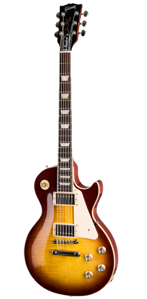 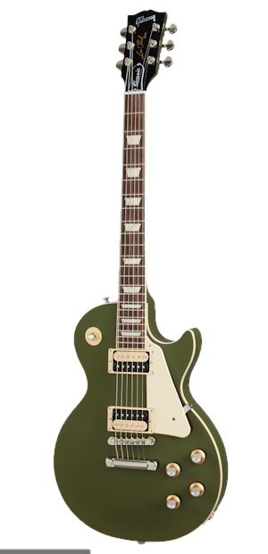
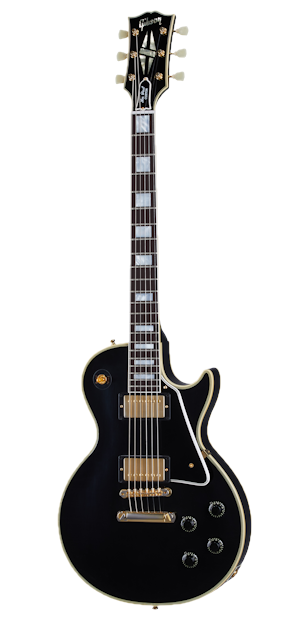
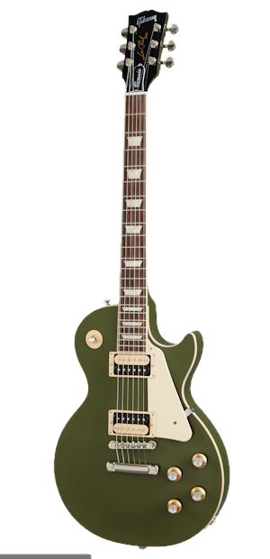
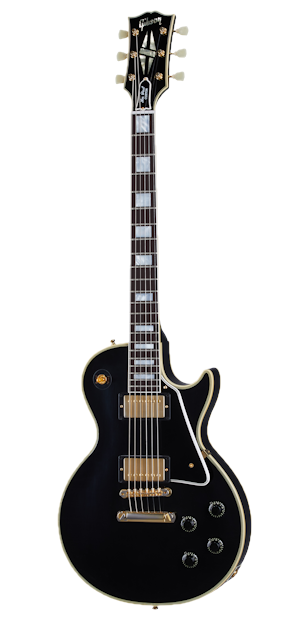
SG
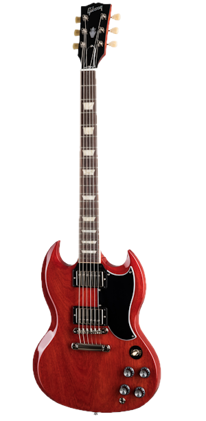 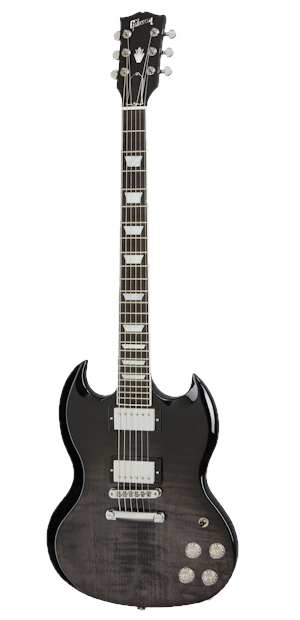 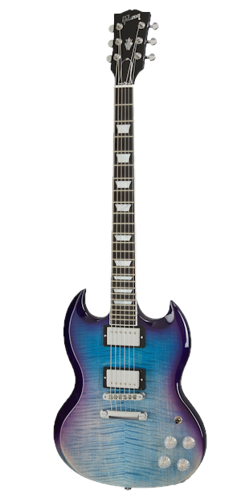 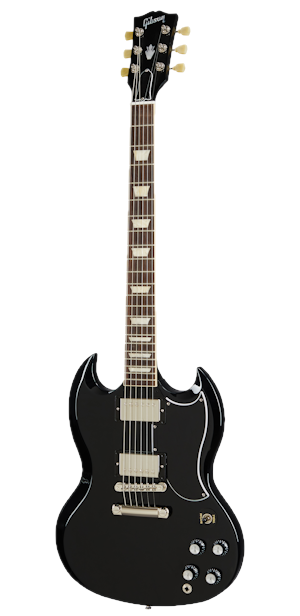ES
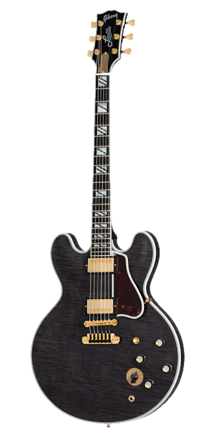 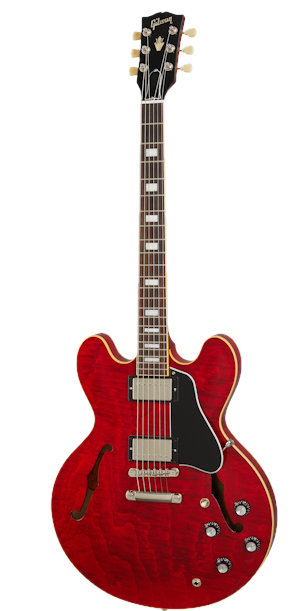 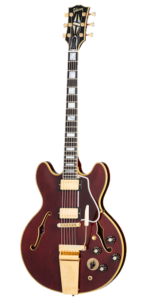
Designer
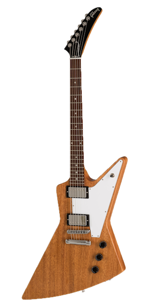 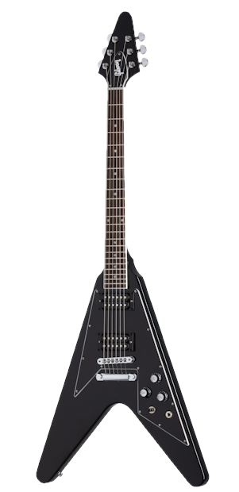 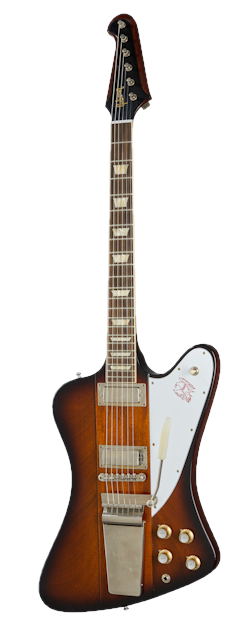 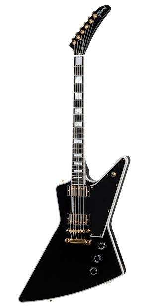 Скрыть Акустические гитарыAn Ideal Blend of Modern and Traditional Features
Whether you’re writing a song at home, laying it down in the studio, or bringing it to thousands on stage, the Jerry Cantrell "Fire Devil" Songwriter delivers. Made to the Alice in Chains guitarist's specifications, the Jerry Cantrell "Fire Devil" Songwriter builds upon the traditional Gibson Songwriter platform.
The J-45 Gets Six Extra Strings and Chimes Like Never Before
The J-45 is a truly legendary guitar. The world-famous Workhorse is Gibson's best-selling acoustic of all time. Now it is available in a new 12-string version. Featuring a mahogany body, Sitka spruce top, and mahogany neck, it has a SlimTaper™ neck profile for playing comfort, a bone nut and saddle, TUSQ® bridge pins, Grover® Mini Rotomatic®.
A Rosewood Square Shoulder Powerhouse
First introduced in 2003, the Songwriter combines Gibson’s time-honored bracing patterns of the 1930’s with our original dreadnought shape, providing a supreme tonal quality. Featuring beautiful rosewood back and sides paired with a Sitka spruce top. The Songwriter is Gibson’s modern rosewood dreadnought with a superior dynamic range.
A Jumbo with unparalleled tonal balance
The J-185 is believed by many to be one of Gibson's best acoustic instruments, yet it seems to be fairly obscure, much to the delight of devoted Gibson lovers. Originally released in the early 1950s and designed to be slight smaller than its larger companion, the SJ-200, the J-185 still offers superior performance and tone.
A Booming Beginning
The guitar that started the legacy of Gibson Jumbo acoustics. When Gibson released the Jumbo in 1934, it was larger than any other guitar Gibson offered, and it made for a remarkable instrument. Only built for two production years, these rare instruments quickly became artist favorites.
An Ideal Blend of Modern and Traditional Features
Whether you’re writing a song at home, laying it down in the studio, or bringing it to thousands on stage, the Jerry Cantrell “Atone” Songwriter delivers. Made to the Alice in Chains guitarist's specifications and prominently featured in his “Atone” video, the Jerry Cantrell “Atone” Songwriter builds upon the traditional Gibson Songwriter platform.
One of Gibson's most distinctive acoustic instruments
The unmistakable Gibson Hummingbird is followed by the masses as one of the most remarkable acoustic guitars ever built. The new Hummingbird Original blends vintage appointments and today's modern, high-quality build construction. Outfitted with gold Gotoh Keystone tuners, double antiqued binding, a traditional Hummingbird truss rod cover.
Great to be King
The Acoustic Custom Shop has recreated the King of the Flat-Tops. One of Gibson’s most storied models, this Historic Reissue instrument is hand-built in Gibson's celebrated Bozeman facility using the finest materials and styled after its late 1930s counterparts. Each is constructed with a select Thermally Aged Adirondack
Hail to the King
The legacy of Gibson’s “King of the Flat-Tops” continues with the SJ-200 Western Classic. From its first appearance in 1937, Gibson’s SJ-200 set an unmatched standard. The SJ-200 Western Classic from the Gibson Acoustic Custom Shop continues that tradition. With Indian rosewood back and sides paired with a AAA Sitka spruce top.
You Belong Among the Wildflowers
Tom Petty needs no introduction. Both solo and with his band the Heartbreakers, he created some of the most beloved and enduring music of the rock era. The original SJ-200 Wildflower was a one-off that was built for Tom during the Wildflowers era in the 1990s. Now Gibson is proud to release the Tom Petty SJ-200 Wildflower.